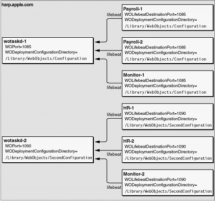

| PATH |

You can deploy and configure separate sites on a set of computers by running multiple HTTP servers, each with its own HTTP adaptor. Such a deployment requires a separate group of wotaskd processes running on the same port. You also need an additional Monitor process to configure each site.
The default installation of the WebObjects Deployment package
provides you with one site—one wotaskd process per host, running
on port 1085. To create
a second site, using the same hardware, you'll have to add an
additional wotaskd process to each of the hosts you want to use.
What separates the environments from each other are the WOPort and WOLifebeatDestinationPort settings
of each wotaskd process and the configuration directory used for
each site. The application instances send their lifebeats to their WOLifebeatDestinationPort,
while wotaskd processes listen for them in their WOPort. Figure 6-21 illustrates
two sites on one host.
Figure 6-21 Multiple application environments on one computer
Because Monitor is not started by a wotaskd process, its WOLifebeatDestinationPort argument
needs to be set to match wotaskd's WOPort setting.
For details on how to set the different command-line argument values required when starting wotaskd and Monitor processes for separate application environments, see "WOPort", "WOLifebeatDestinationPort", and "WODeploymentConfigurationDirectory".